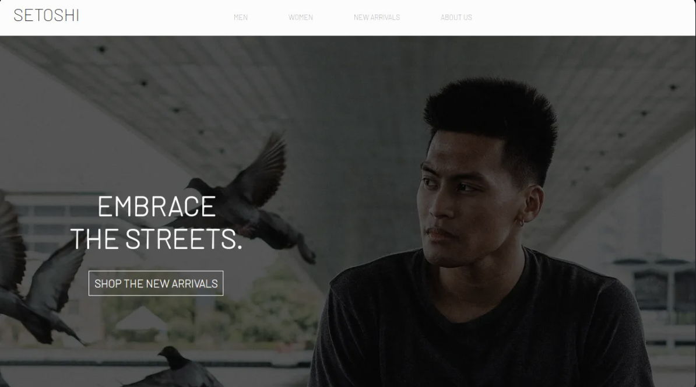

Setoshi - Mock Clothing Site
Using HTML and CSS, this is a representation of a modern clothing store page! In the "New Arrivals" page with Javascript, there is a shopping cart feature that's saves a user's cart with the local storage API.
Using HTML and CSS, this is a representation of a modern clothing store page! In the "New Arrivals" page with Javascript, there is a shopping cart feature that's saves a user's cart with the local storage API.

After learning it's characteristics, I made a revamped site that represents the Colorado Symphony with HTML and responsive CSS.
As a fan of deadmau5, I decided to combine creative aspects of his branding into a site that uses responsive CSS.